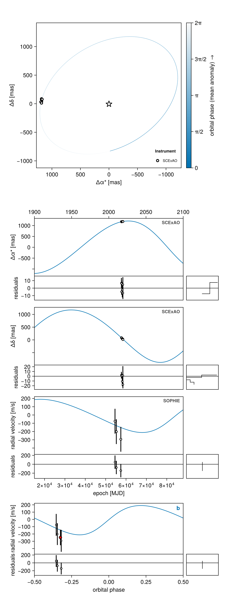
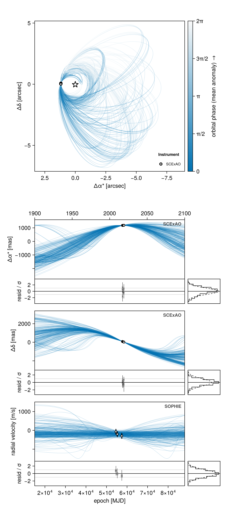
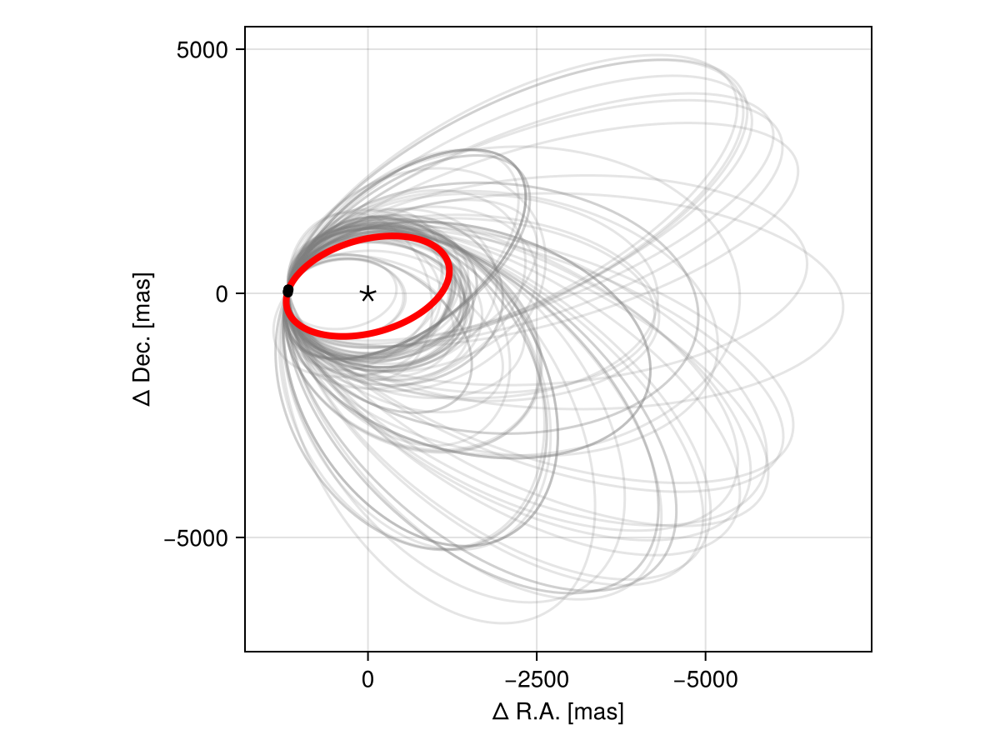
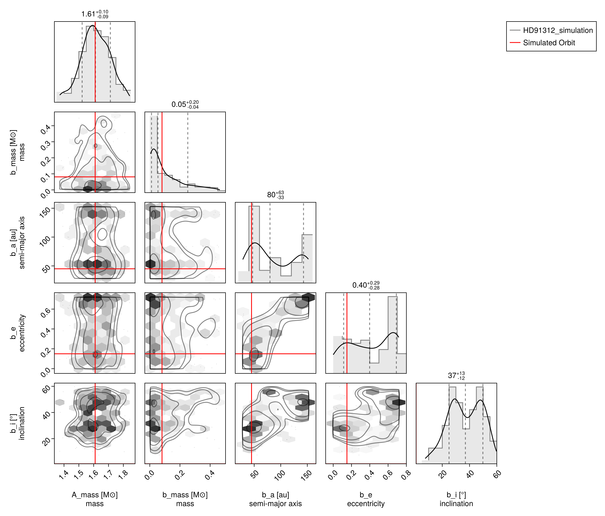
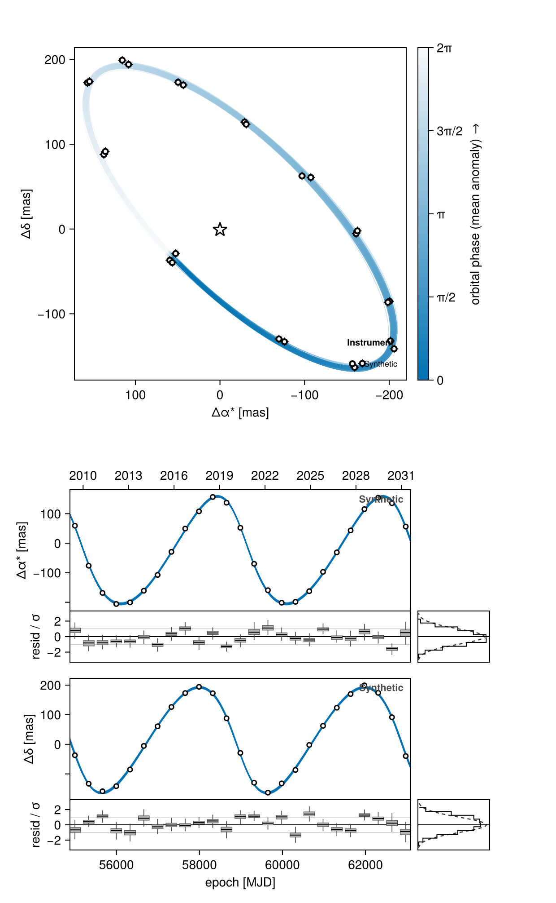

Generating and Fitting Simulated Data
This tutorial demonstrates how to use Octofitter to simulate synthetic data, fit models to that data, and validate the results. This is a crucial workflow for understanding model performance and testing analysis pipelines.
We'll simulate data from a known set of parameters, fit a model to recover those parameters, and compare the posterior to the true values used for simulation.
Setup
using Octofitter, Distributions
using CairoMakie, PairPlots
using Random
using PigeonsDefine the Model
In order to simulate data from Octofitter, you start by defining a real model with data. The simulate step will use the provided epochs, data types, and uncertainties when simulating data. If you don't have real data, you can enter in arbitrary values for e.g. delta R.A., but use expected epochs and uncertainties.
For this example we use relative astrometry and stellar radial velocities of a single companion. Every observation type in Octofitter that carries data implements the same generative interface, so the recipe below transfers unchanged to interferometry and to absolute astrometry (see Simulating absolute astrometry at the end).
# relative astrometry data (from discovery paper)
astrom_dat = Table(;
epoch = [mjd("2016-12-15"), mjd("2017-03-12"), mjd("2017-03-13"), mjd("2018-02-08"), mjd("2018-11-28"), mjd("2018-12-15")],
ra = [133., 126., 127., 083., 058., 056.],
dec = [-174., -176., -172., -133., -122., -104.],
σ_ra = [07.0, 04.0, 04.0, 10.0, 10.0, 08.0],
σ_dec = [07.0, 04.0, 04.0, 10.0, 20.0, 08.0],
cor = [0.2, 0.3, 0.1, 0.4, 0.3, 0.2]
)
# RV data
rv_dat = Table(;
epoch = [mjd("2008-05-01"), mjd("2010-02-15"), mjd("2016-03-01")],
rv = [1300., 700., -2700.],
σ_rv = [150., 150., 150.]
)
# Host star
A = Body(
name="A",
variables=@variables begin
mass ~ truncated(Normal(1.61, 0.1), lower=0.1) # M⊙
end
)
# Companion
b = Body(
name="b",
about=A,
variables=@variables begin
mass ~ LogUniform(5mjup, 500mjup) # M⊙ (mjup is a plain constant)
a ~ LogUniform(10.0, 200.0)
e ~ Uniform(0, 0.9)
ω ~ Uniform(0, 2pi)
i ~ Sine()
Ω ~ Uniform(0, 2pi)
θ ~ Uniform(0, 2pi)
epoch = 57737.0 # reference epoch for θ
end
)
astrom_obs = RelAstromObs(astrom_dat; target=b, ref=A, name="SCExAO")
rvlike = RadialVelocityObs(
rv_dat;
target=A, ref=Barycentre,
name="SOPHIE",
variables=@variables begin
jitter ~ truncated(Normal(10, 5), lower=0)
offset ~ Normal(0, 1000)
end
)
sys = System(
name="HD91312_simulation",
bodies=[A, b],
observations=[astrom_obs, rvlike],
variables=@variables begin
plx ~ truncated(Normal(29.15, 0.14), lower=0.1)
end
)
model = Octofitter.LogDensityModel(sys)[ Info: [HD91312_simulation] observing_geometry = false (auto): worst accumulated bias 0.0608σ, 1.64× inside the 0.1σ limit — over 300 prior draws (seed 0xc70f177e5000001)
[ Info: [HD91312_simulation] barycentric_lighttime = false (auto): changes no prediction at all — over 300 prior draws (seed 0xc70f177e5000001)
[ Info: [HD91312_simulation] "SOPHIE": Einstein term, peak-to-peak [m/s] ≈ 0.000272 (1.81e-6× its tightest σ = 150.0)
[ Info: [HD91312_simulation] "SOPHIE": secular-acceleration drift, peak-to-peak [m/s] ≈ 0.0 (0.0× its tightest σ = 150.0)
[ Info: Preparing model
┌ Info: Determined number of free variables
└ D = 11
┌ Info: Determined number type
└ T = Float64
ℓπcallback(θ): 0.000028 seconds
∇ℓπcallback(θ): 0.000065 seconds (1 allocation: 32 bytes)- The host star is an ordinary
Body; its mass isA_massin the chain. - Masses are solar masses everywhere.
mjup/mearth/msunare plain multiplicative constants, so500mjupis a mass in M⊙.
Generate Synthetic Data
We have three choices for generating simulated data:
- Draw values from the priors
- Use values from a fitted posterior
- Specifying values manually
We will look at each.
1. Draw values from the priors
We can draw a value from the priors like so:
params_to_simulate = Octofitter.drawfrompriors(model.system)(plx = 29.154874160132113, bodies = (A = (mass = 1.653388435631872,), b = (mass = 0.046637784953825034, a = 129.9282335672959, e = 0.14830724430490558, ω = 4.309664581981969, i = 1.8409511459716799, Ω = 1.3591130626156485, θ = 2.6060687162818414, epoch = 57737.0)), observations = (SOPHIE = (jitter = 4.268497410364141, offset = 1348.9971698496765),))Note the shape: system variables at the top level, then bodies, then observations — a nested NamedTuple keyed by the names you gave each node and observation.
2. Use values from a fitted posterior
We can select a particular draw from the posterior and use this to generate new data
# Perform MCMC fitting on real data
using Pigeons
chain_real, pt = octofit_pigeons(model, n_rounds=5)
# Use one particular draw as the basis of our simulation
draw_number = 1
params_to_simulate = Octofitter.mcmcchain2result(model, chain_real, draw_number)3. Specifying values manually
We can also specify all values for the simulation manually.
Draw from the priors and pin the entries you care about with overrides=. Everything you do not name keeps its prior draw, which matters as models grow: an absolute-astrometry likelihood contributes dozens of nuisance variables, and anything you forget to list would otherwise be missing.
params_to_simulate = Octofitter.drawfrompriors(model.system; overrides=(;
plx = 29.15,
bodies = (;
A = (; mass = 1.61), # M⊙
b = (;
mass = 85mjup, # M⊙
a = 45.0,
e = 0.15,
ω = 1.2,
i = 0.8,
Ω = 2.1,
θ = 1.5,
),
),
observations = (;
SOPHIE = (; jitter = 15.0, offset = 0.0),
),
))(plx = 29.15, bodies = (A = (mass = 1.61,), b = (mass = 0.08114050988739262, a = 45.0, e = 0.15, ω = 1.2, i = 0.8, Ω = 2.1, θ = 1.5, epoch = 57737.0)), observations = (SOPHIE = (jitter = 15.0, offset = 0.0),))overrides= names free (~) variables only, and writes them into the flat parameter vector before it is expanded — so every derived (=) variable is recomputed from the values you gave. Naming a derived variable is an error listing the model's free variables, rather than a silent no-op.
This is the reason not to build the structure by hand with merge. generate_from_params reads the derived orbital elements, not the sampled variables they came from, so a merge that sets a sampled variable leaves any element computed from it stale. In a model with a = sep / system.plx, merge(θ.bodies.b, (; sep=500)) changes sep and leaves a at whatever the prior draw implied — and the simulated data come out at the old a.
The structure of this NamedTuple mirrors your model, so it will change if your model changes. Always start from your own drawfrompriors output rather than copying someone else's. The exact structure is not guaranteed to be stable between versions of Octofitter.
Generate synthetic system with simulated data
Random.seed!(0)
sim_system = Octofitter.generate_from_params(model.system, params_to_simulate; add_noise=true)
sim_model = Octofitter.LogDensityModel(sim_system)LogDensityModel for System HD91312_simulation of dimension 11 and 9 epochs with fields .ℓπcallback and .∇ℓπcallback
generate_from_params returns a whole new System, with each observation replaced by a copy of itself holding simulated data at the original epochs and with the original uncertainties. add_noise=true adds a draw from each observation's own noise model (including the jitter params_to_simulate specifies); add_noise=false gives the noiseless model prediction, which is what you want to check that a fit recovers a known truth exactly.
The simulated data are right there if you want to inspect them:
sim_system.observations[1].tableTable with 6 columns and 6 rows:
epoch ra dec σ_ra σ_dec cor
┌────────────────────────────────────────────
1 │ 57737.0 1181.88 85.5832 7.0 7.0 0.2
2 │ 57824.0 1183.19 79.2738 4.0 4.0 0.3
3 │ 57825.0 1172.28 77.6564 4.0 4.0 0.1
4 │ 58157.0 1181.26 41.6467 10.0 10.0 0.4
5 │ 58450.0 1193.42 32.2764 10.0 20.0 0.3
6 │ 58467.0 1182.59 12.3365 8.0 8.0 0.2Let's plot the simulated orbit and data to see what we generated:
# Convert true parameters to chain format for plotting
true_chain = Octofitter.result2mcmcchain([params_to_simulate])
# Plot the simulated system with true parameters
octoplot(sim_model, true_chain)
Fit the Simulated Data
Now we'll sample from the posterior using the simulated data:
# Sample from the simulated data
Random.seed!(1)
chain, pt = octofit_pigeons(sim_model, n_rounds=8, explorer=SliceSampler())
display(chain)[ Info: Sampler running with multiple threads : true
[ Info: Likelihood evaluated with multiple threads: false
[ Info: [HD91312_simulation] observing_geometry = false (user)
[ Info: [HD91312_simulation] barycentric_lighttime = false (user)
[ Info: [HD91312_simulation] observing_geometry = false (user)
[ Info: [HD91312_simulation] barycentric_lighttime = false (user)
┌ Info: Starting values not provided for all parameters! Guessing starting point using global optimization:
│ num_params = 11
└ num_fixed = 0
┌ Warning: Pathfinder error: MethodError(copy, (SplittableRandoms.SplittableRandom(0x4612a50ef2b9dec0, 0xaabf13ae126f9159),), 0x000000000000a2fd)
└ @ Octofitter ~/octo-maintenance/runner/actions-runner/_work/Octofitter.jl/Octofitter.jl/src/initialization.jl:944
┌ Warning: Using BBO result as fallback
└ @ Octofitter ~/octo-maintenance/runner/actions-runner/_work/Octofitter.jl/Octofitter.jl/src/initialization.jl:945
┌ Info: Found sample of initial positions
│ logpost_range = (-68.05086137603361, -68.05086137603361)
└ mean_logpost = -68.05086137603357
────────────────────────────────────────────────────────────────────────────────────────────────────────────────────────
scans restarts Λ Λ_var time(s) allc(B) log(Z₁/Z₀) min(α) mean(α) min(αₑ) mean(αₑ)
────────── ────────── ────────── ────────── ────────── ────────── ────────── ────────── ────────── ────────── ──────────
2 0 2.27 1.68 0.977 6.09e+06 -7.38e+03 0 0.873 1 1
4 0 5.02 5.51 0.0686 2e+05 -75.1 6.3e-12 0.66 1 1
8 0 7.79 6.33 0.126 3.37e+05 -71.2 0.0968 0.544 1 1
16 0 6.78 6.58 0.247 6.16e+05 -71.6 0.243 0.569 1 1
32 0 7.31 7.33 0.509 1.08e+06 -74.1 0.333 0.528 1 1
64 0 6.69 4.16 1.86 5.66e+07 -71.4 0.12 0.65 1 1
128 7 7.01 4.41 2.1 9.32e+07 -75.6 0.404 0.632 1 1
256 14 7.17 4.66 4.15 1.85e+08 -74.4 0.467 0.619 1 1
────────────────────────────────────────────────────────────────────────────────────────────────────────────────────────A simulation-and-recovery check is only meaningful if the sampler explored the whole posterior: a mode you never visited looks exactly like a parameter you failed to recover. octofit_pigeons runs a ladder of tempered chains between the prior and the posterior, so isolated modes stay reachable, which is why this page tempers rather than running a single HMC chain.
octofit is a reasonable alternative once you know the posterior is unimodal — it is much cheaper per sample. If you go that route, seed it well with initialize! and run several chains from different starting points so a missed mode shows up as a disagreement between them rather than as a confident wrong answer.
Compare Results
Let's visualize how well our sampling recovered the true parameters:
# Plot the posterior from fitting simulated data
octoplot(sim_model, chain)
Overlay True and Recovered Parameters
For a direct comparison, we can overlay the true orbit on the posterior draws. A chain row is turned back into a whole PlanetOrbits.System with construct_system, which we can hand straight to Makie:
fig = Figure()
ax = Axis(fig[1,1], xlabel="Δ R.A. [mas]", ylabel="Δ Dec. [mas]",
xreversed=true, aspect=1)
# Posterior draws in grey
for i in rand(Random.Xoshiro(0), 1:size(chain,1), 100)
posys = construct_system(sim_model, chain, i)
Makie.lines!(ax, posys, :b, :A, color=(:grey, 0.2))
end
# The true orbit, in red
true_sys = construct_system(sim_model, true_chain, 1)
Makie.lines!(ax, true_sys, :b, :A, color=:red, linewidth=4)
# The simulated data
sim_astrom = sim_system.observations[1].table
Makie.scatter!(ax, sim_astrom.ra, sim_astrom.dec, color=:black, markersize=8)
Makie.scatter!(ax, [0], [0], marker='⋆', color=:black, markersize=20)
fig
octoplot covers the standard figures. For a custom overlay like the one above, construct_system plus Makie.lines!(ax, posys, target, ref) draws any pair of references you like — a companion against another companion, against the barycentre, and so on.
Corner Plot Comparison
Compare the parameters used to generate the simulated data, and the recovered posterior:
# Create corner plot showing both posterior and true values
octocorner(
sim_model,
chain,
small=true,
truth=(PairPlots.Truth((;
A_mass=collect(true_chain[:A_mass][:]),
b_a=collect(true_chain[:b_a][:]),
b_e=collect(true_chain[:b_e][:]),
b_i=collect(true_chain[:b_i][:]),
b_mass=collect(true_chain[:b_mass][:]),
),label="Simulated Orbit", color=:red)=>(
PairPlots.MarginLines(),
PairPlots.BodyLines(),
),)
)
Note that the host star's mass is A_mass: it is an ordinary variable of the A body.
Simulating absolute astrometry
The same three steps — build a model with real epochs, draw parameters, call generate_from_params — work for Gaia and Hipparcos absolute astrometry. Two practical differences are worth knowing before you try:
- Those likelihoods contribute a large block of their own nuisance variables (per-transit selection latents, calibration noise terms). Build your parameter NamedTuple with
drawfrompriors(sys; overrides=…), as above, rather than writing it out. G23HObsandHGCAObsneed the full absolute frame in the system block —plx,ra,dec,pmra,pmdec,rvandref_epoch, all seven. A partial frame is an error, because the model has no way to place the source on the sky without it.
pma_obs = HGCAObs(; gaia_id=756291174721509376, target=A, blends=(b,), ref=Barycentre)
sys = System(
name="HD91312_pma_simulation",
bodies=[A, b],
observations=[pma_obs, astrom_obs, rvlike],
variables=@variables begin
plx ~ gaia_plx(gaia_id=756291174721509376)
ra = 158.30707896392835
dec = 40.42555422701387
pmra ~ Normal(-137, 10)
pmdec ~ Normal(2, 10)
rv = 0.0
ref_epoch = Octofitter.meta_gaia_DR3.ref_epoch_mjd
end
)A and b each need a flux_G and a flux_Hp variable for this — the companion's flux ratios are read from the bodies now rather than from a vector on the observation. Setting the host's to 1.0 and a dark companion's to 0.0 reproduces the usual case.
For a fully worked absolute-astrometry simulation, including how to build a realistic scan law and noise model for a chosen target, see Simulating and Fitting Gaia DR4 Data.
Using PlanetOrbits Directly for Synthetic Data
Sometimes you may want to generate synthetic astrometry data directly from orbital parameters, without going through the full Octofitter model setup. This is useful for quick tests, validation studies, or when you want fine-grained control over the simulation process.
Octofitter uses PlanetOrbits.jl for orbital calculations. For full details on orbit types, coordinate conventions, and available functions, see the PlanetOrbits.jl documentation:
- Introduction to PlanetOrbits - Getting started with orbit creation
- Coordinate Conventions - Coordinate system and orbital element definitions
- API Reference - Complete function reference
Example: Generating Synthetic Astrometry
Here's a complete example generating synthetic astrometry data for testing:
using PlanetOrbits
# `orbit` is PlanetOrbits' two-body convenience constructor. It is deliberately
# not exported — for anything hierarchical, build a `System` of `Orbit`s.
using PlanetOrbits: orbit
Random.seed!(42)
# True orbital parameters
true_a = 5.0 # AU
true_e = 0.3
true_i = deg2rad(68.8)
true_Ω = deg2rad(45.0)
true_ω = deg2rad(85.0)
true_tp = 55000.0
true_M = 1.05 # Solar masses (star + companion)
true_plx = 50.0 # mas
# Create the orbit: a massless secondary named :b about a primary named :A
true_orb = orbit(
a = true_a, e = true_e, i = true_i,
Ω = true_Ω, ω = true_ω, tp = true_tp, M = true_M,
plx = true_plx
)
# Generate observation epochs (25 epochs over 2 orbital periods)
period_days = period(true_orb)
epochs = range(55000, 55000 + 2*period_days, length=25)
# Measurement uncertainty
σ_astrom = 5.0 # mas
# Generate synthetic observations
traj = orbitsolve(true_orb, collect(epochs))
ra_obs = [raoff(sol, :b, :A) + σ_astrom * randn() for sol in traj]
dec_obs = [decoff(sol, :b, :A) + σ_astrom * randn() for sol in traj]
# Create an Octofitter-compatible data table
astrom_data = Table(
epoch = collect(epochs),
ra = ra_obs,
dec = dec_obs,
σ_ra = fill(σ_astrom, length(epochs)),
σ_dec = fill(σ_astrom, length(epochs)),
cor = zeros(length(epochs)) # no correlation between RA and Dec errors
)
println("Generated $(length(epochs)) synthetic astrometry points")
println("Period: $(round(period_days/365.25, digits=2)) years")
display(first(astrom_data, 5))Generated 25 synthetic astrometry points
Period: 10.91 yearsYou can now use this synthetic data with Octofitter:
A2 = Body(
name="A",
variables=@variables begin
mass ~ truncated(Normal(1.05, 0.1), lower=0.1)
end
)
b2 = Body(
name="b",
about=A2,
variables=@variables begin
a ~ LogUniform(1, 20)
e ~ Uniform(0, 0.9)
ω ~ Uniform(0, 2π)
i ~ Sine()
Ω ~ Uniform(0, 2π)
θ ~ Uniform(0, 2π)
epoch = 55000.0
end
)
astrom_obs2 = RelAstromObs(astrom_data; target=b2, ref=A2, name="Synthetic")
sys2 = System(
name="SyntheticTest",
bodies=[A2, b2],
observations=[astrom_obs2],
variables=@variables begin
plx ~ truncated(Normal(50.0, 0.5), lower=0.1)
end
)
model2 = Octofitter.LogDensityModel(sys2)
init_chain = initialize!(model2, (; plx=50.0, bodies=(; A=(; mass=1.05), b=(; a=5.0, e=0.3))))
# Visualize the initial fit
octoplot(model2, init_chain)